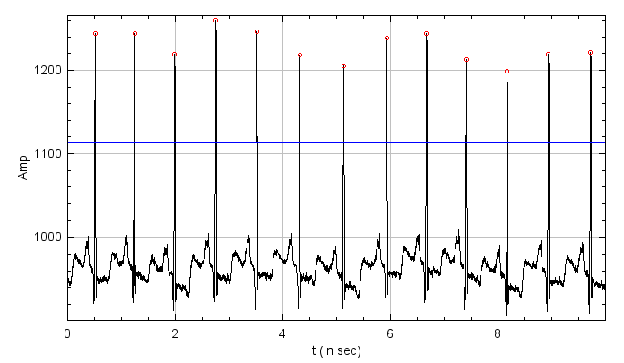

Submission deadline: 18.05.20 23:59h
Please ensure that all files you created also contain your name and your IDM ID and also your partner's name and IDM ID if you're not working alone.
Each exercise has 10 points. You have to achieve 30 of 60 points in six homework exercises to pass the module.
Statistical Measures
In this exercise, we want to have a look on how we can analyze signals using simple statistical measures. We will use a freely available ECG data set with the goal to distinguish healthy from patients with heart rythm problems.

You can find the original data set here but we recommend to use a post-processed version available on studOn.
Gradle Build System
In Medizintechnik II we use the build system Gradle. Gradle is especially popular for Android projects since it's easy to add new software dependencies that will be automatically downloaded.
In our case, the published data set is saved as Matlab *.mat files.
To read those files, an external dependency was already added to our build.gradle file.
implementation 'us.hebi.matlab.mat:mfl-core:0.5.6'
does the magic and automatically downloaded a *.mat file reader. In case, you need to add external software to your own projects you can use this search engine.
Tasks
Loading one of File of the Data Set
Load the file src/main/java/exercises/Exercise02.java (available here (Click the raw button)) into your existing project.
It alread contain some code for parsing the program parameters:
public static void main(String[] args) throws IOException {
(new ij.ImageJ()).exitWhenQuitting(true);
System.out.println("Started with the following arguments:");
for (String arg : args) {
System.out.println(arg);
}
if (args.length == 1) {
File file = new File(args[0]);
if (file.isFile()) {
// Your code here:
} else {
System.err.println("Could not find " + file);
}
} else {
System.out.println("Wrong argcount: " + args.length);
System.exit(-1);
}
Launch Exercise02 with the one of the files of the data set as an argument (e.g. <where_you_saved_your_data_set>/MLII/1 NSR/100m (0).mat)!
Your program should print now the file name you selected:

Remember to never put file names directly in your code. Your program will then only work on your machine!
Let's open this file!
if (file.isFile()) {
// A file should be opened
us.hebi.matlab.mat.types.Matrix mat = Mat5.readFromFile(file).getMatrix(0);
Signal heartSignal = new mt.Signal(mat.getNumElements(), "Heart Signal");
for (int i = 0; i < heartSignal.size(); ++i) {
heartSignal.buffer()[i] = mat.getFloat(i);
}
heartSignal.show();
} else if (file.isDirectory()) {
You should now see the signal. However, this plot does not have any labels with physical units attached. We will change that later.

Extension of Signal.java
4 Points
To analyze this and other signals, we will extend our Signal class.
Please implement the following methods in Signal.java that calculate some descriptive properties of the signal:
public float min() //< lowest signal value
public float max() //< largest signal value
public float sum() //< sum of all signal values
public float mean() //< mean value of the signal
public float variance() //< variance of the signal
public float stddev() //< standard deviation of the signal
Test the methods in your main function and check whether the calculated values seem plausible by looking at your plot and printing the calculated values.
Physical Dimensions
1 Points
The code for this section belong to Signal.java
In the last exercise, we treated signals as pure sequence of numbers without any physical dimensions. But for medical measurements physical dimensions are important. We want to extend our plot to look like this with the horizontal axis labeled with seconds:

To do this we will add a new member to our signal that's describing the physical distance between two samples
protected float spacing = 1.0f; //< Use 1.0f as a default when we don't set the physical distance between points
Add also a setter and getter method
public void setSpacing(float spacing)
public float spacing()
Read in the discription of the data set the sampling frequency of the signal
and use it to calculate the spacing between two samples. Set this property setSpacing in the main method.
Next, we want to change show() to regard our spacing and to accept a ij.gui.Plot so that we can set the axis of our plot.
public void show(Plot plot) {
DisplayUtils.showArray(buffer, plot, /*start of the signal=*/0.f, spacing);
}
Because we are lazy, we can still keep the original usage of show()
public void show() {
DisplayUtils.showArray(buffer, name, , /*start of the signal=*/0.f, spacing);
}
Please create an instance of ij.gui.Plot in the main method of Exercise02 with descriptive labels for both axis and use if for heartSignal.show(...).
// Constructs a new Plot with the default options.
Plot plot = new Plot("chosee title here", "choose xLabel here", "choose yLabel here")
heartSignal.show(plot);
//... add here more plotting stuff
plot.show()
Determine the Heart Frequency
5 Points
The remainder of this exercise will be implemented in Exercise02.java
Create a file src/main/java/lme/HeartSignalPeaks.java with following content
package lme;
import java.util.ArrayList;
public class HeartSignalPeaks {
public ArrayList<Double> xValues = new ArrayList<Double>();
public ArrayList<Double> yValues = new ArrayList<Double>();
}
ArrayList behave like arrays, except you can add new items to make it longer. You can read more about them here.
We now want to find the peaks of the heart signal. We do that by finding local maxima within region that are above a certain
threshold (here in blue).
Find a good value of this threshold so that all peaks are above this value.
You may use mean(), max(), min() to calculate it.
You can see your threshold by ploting it:
plot.setColor("blue");
plot.add("lines", new double[] { 0, /* a high value */10000 }, new double[] { threshold, threshold });
Implement the following method that finds all peaks of the signal.
public static lme.HeartSignalPeaks getPeakPositions(mt.Signal signal, float threshold)
To determine the signal peaks, one can use normal maximum search over the signal values.
Save the found maximum value (i.e. signal amplitude) in x(max) and
the location of maximum (i.e. the time at which the peak occurs) in y(arg max).
You can implement the peak finding method as follows:
-
Loop over the signal and at each index
-
Use
booleanvariable to determine if the current signal value is above the threshold. -
If the previous signal value was above the threshold (i.e
booleanvalue was true), and the current value is below threshold (i.ebooleanvalue is false) -
Add the previous signal value as a instance of
HeartSignalPeaks(likepeaks.xValuesandpeaks.yValues)
This is a suggested workflow, but feel free to use your own ideas to efficently find the peaks of the signal.
You can plot the peaks you have found:
plot.setColor("red");
plot.addPoints(peaks.xValues, peaks.yValues, 0);
Next, create a Signal with the difference in time between succesive peaks (import import java.util.ArrayList;).
public static mt.Signal calcPeakIntervals(lme.HeartSignalPeaks peaks) {
ArrayList<Double> peakPositions = peaks.xValues;
if (peakPositions.size() > 1) {
Signal intervals = new mt.Signal(peaks.xValues.size() - 1, "Peak Intervals");
for (int i = 0; i < peakPositions.size() - 1; ++i) {
intervals.buffer()[i] = (float) (peakPositions.get(i + 1) - peakPositions.get(i));
}
return intervals;
} else {
return new mt.Signal(1, "No Intervals found");
}
}
You can use that signal to determine the mean cycle duration (peakIntervals.mean()), the mean heart frequency ((1. / intervals.mean())) and
beats per minute (60. * 1. / intervals.mean()). Print those values!
Summary of tasks
To summarize the list of tasks that needs to be implemented to complete this exercise
- Set the file path correctly to load the signal into your program (Ensures you can load the signal inside the program)
- Add labels to the plot, include spacing variable in signal class for visualizing plots in physical dimensions.
- Implement methods to compute statistical measures (like mean, median,...). (Use the formula provied in lecture/exercise slides)
- Determine the threshold (follow the description provided here)
- Find the peaks (follow the description provided here)
- Calculate intervals between the peaks
Note
While setting file path as arguments, add "path" if there are spaces in file name since java parses space as new arguments.
Bonus
This is not required for the exercise.
Run Exercise02 with other files of the data set as an argument.
What is the meaning of the mean value and the variance of time distance between the peeks?
How do signals with low variance in the peak distances look like and how signals with high variance?